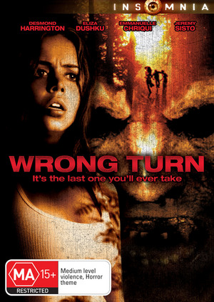

Titolo: Wrong Turn
Anno: 2003
Regia: Rob Schmidt.
Interpreti: Eliza Dushku, Desmond Harrington, Emmanuelle Chriqui, Jeremy Sisto, Kevin Zegers,
Lindy Booth, Julian Richings, Gary Robbins, Tyler Garling, Wayne Robson, Yvonne Gaudry, Joel Harris.
Durata: 84 min
Trama:
Un gruppo di giovani rimane intrappolato in una spettrale foresta del West Virginia. Ben presto,
i ragazzi scopriranno, di essere diventati preda di leggendari cannibali dal volto sfigurato.
Quelli di voi che avranno letto solo la trama o a malapena visto il trailer, di questo horror
estivo, penseranno che Wrong Turn sia un filmetto come tanti altri. Al contrario, questa pellicola
sorprende per la sua tecnica e per il suo stile.
Abilmente diretto e particolarmente accurato nei torbidi dettagli scenografici, il film di Rob Schmidt
vanta anche un buon cast, in cui spicca la bella e brava Eliza Dushku.
Commenti: